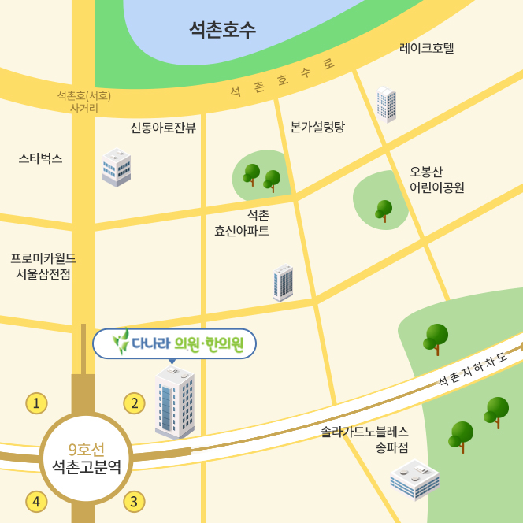

다나라의원·한의원은 의학적 진단과 통합의학적 치료의 장점을 결합하여 가장 안전하고 효과적인 비수술 통합 치료를 제공합니다.
단순히 통증만 없애는 것이 아니라, 통증의 근본 원인을 찾아 해결하고 환자분이 이전의 신체능력을 회복하도록 하는 것이 저희의 목표입니다.
대표원장 지창윤 · 이광은
첨단 초음파 장비와 의학적 검사를 통해 원인을 정확히 파악합니다.
스테로이드 사용을 줄이고 신체 자생력을 높이는 양·한방 통합요법을 시행합니다.
환자의 아픔을 가족처럼 공감하며 진심으로 소통합니다.
| 평 일 | 09:30 - 18:30 (화, 목 20:30분까지 야간진료합니다) |
|---|---|
| 점심시간 | 13:00 - 14:00 |
| 토요일 | 09:30 - 14:00 |
| 법정공휴일 | 10:00 - 13:00 |
| 휴무일 | 일요일 |
* 토요일은 점심시간 없이 진료합니다.
* 마감 30분 전까지 접수 가능합니다.
서울시 송파구 백제고분로 279
(9호선 석촌고분역 3번 출구 도보 3분)
